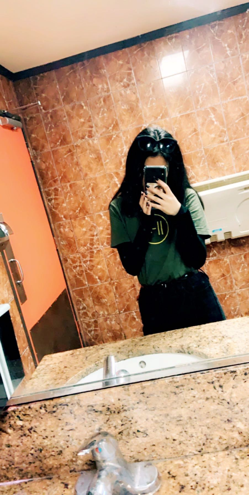

About Us!

Our Team
Hello friends! Welcome to our website! We are the team behind Style Studio. Our team is made up of a variety of personalities from Girls Who Code. We created this website to showcase differnt styles and explain the life of new fashion these days. This website was coded by Martha D , Daniela C , Katelyn P , Vivian C, and Serenity. Check out our own profies and lookbooks down bellow!
Martha Dempkey
Hi! My name is Martha, I’m 16 and go to Da Vinci Commutations. Some small things to know about me are that I love the Sims and are over the moon aboout the band Panic! At The Disco. The style I got on the quiz is Rocker. I personally agree with this statement. I sometimes think I’m more of a punk rock type but either way I believe this is my fashion choice. I love wearing black and having a band t shirt is my groove. Eyeliner and hair dye are also parts of my life as well. And not forgetting to add back heels or a chocker can ruin my look. Check out my look book down below to find out more about my fashion styles. ♥️



Katie Pool
Hey, my name is Katie Pool and I’m a 16 year old student at Calabasas High School! Born and raised in the suburbs of LA, I have spent my entire life in the same house growing up alongside my four older siblings. As the youngest child, I struggled with standing out and personal expression among such a busy household. By establishing my own style, I developed myself as an individual and had fun simultaneously! I received “Trendy” on our style quiz which completely complements my style! Skirts, t-shirt dresses, jeans, leggings, and button down shirts are all necessities of my closet. I also enjoy regularly shopping and keeping my closet fresh and interesting! Check out my looks below!
Vivian Crooks